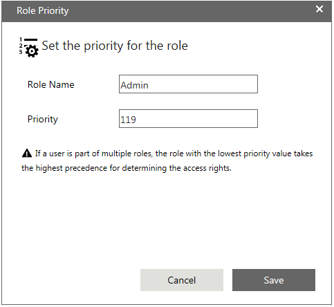

No
You can add Users or Roles as participants in the queue. You can also set the priority for a role.
To add users to the queue:
To add roles to the queue:
Note: AVEVA Work Tasks requires a database setting to synchronize the users who are participants of a queue by virtue of their role, if the role changes in the resource database. For more information, see the Synchronizing Roles of Queue Participants topic in the Developer Guide.
Tip: You can add all the users (or all the roles) at once by clicking the [>>] icon in the respective window.
To set the priority for roles:
When you associate a user to a role, the user gets the access rights configured for the role. If the user is associated to multiple roles, you can define the priority for a role. The role priority determines which role takes precedence. The user gets the access rights of the role with the lowest priority value.

In the Role Name field, the name of the role for which you want to set the priority is displayed.
You can specify the value from "1" to "9999". The default priority value for a role is "9999" and for a user is "0".
Set the value to a lower number if you want the role to have a higher priority.
Note:
- It is recommended to specify the priority value in multiples of 10.
- If a user is part of multiple roles, the role with the lowest priority value takes the highest precedence for determining the access rights.
- If a user is added as a direct participant to the queue, then the access rights defined for the user take precedence, even if the user is associated to a different role.
However, if the user is not added as a direct participant to the queue, the access rights for the user are based on the priority value of the roles.